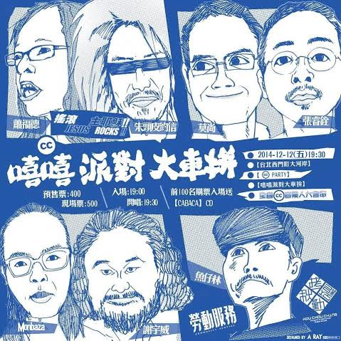

12/12 鬥陣來嘻嘻趴踢

12/12 週五夜， 一群支持自由文化的音樂人，相約在河岸流言，打算舉辦場久違的 CC party。是的，這是場售票活動。創用 CC 授權的提出，本來就不排斥商業行為，它推展的是自由文化，而不是免費文化。
歡迎大家線上預購，鬥陣來參加這場嘻嘻趴踢。
線上預購：https://tickets.books.com.tw/progshow/03050001178129
大河岸官網：https://www.riverside.com.tw/index.php?option=com_livehouse&show_time=2014-12

（DM設計：A RAY，CC BY-NC-SA 3.0 台灣）
音樂圈是身處中研院的台灣創用 CC 計畫首先接觸的創作領域，也多虧這些音樂圈好朋友的支持，讓這個有點硬的著作權議題，有了比較有趣的呈現。
近幾年，我們更開始努力多元接觸各領域的創作人，希望這樣的工具，真能為大家帶來幫助。唯有讓更多人瞭解、使用這樣的公眾授權，它的存在才能有價值與意義。
在數位環境的現代，你、我，都可能是創作人！我們歡迎各種創作領域的應用呈現，如果你有想法或想實驗的計畫／活動，也歡迎來信至 This e-mail address is being protected from spambots. You need JavaScript enabled to view it 與我們聯繫討論！